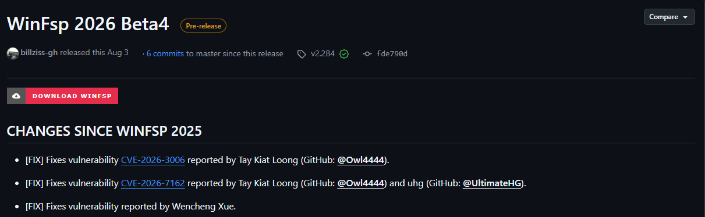

Introduction
While reviewing WinFsp's kernel-mode notification handling, I found a bounds-checking issue that allowed an unprivileged local user to read beyond a notification buffer. Depending on the memory layout, the same flaw could also trigger a kernel crash.
The vulnerability was in the handling of FSP_FSCTL_NOTIFY. Each notification record contains a 16-bit Size field describing the length of that record, including its filename. WinFsp checked that this value was large enough to contain the structure, but never verified that the declared size actually fit inside the remaining input buffer.
That missing upper-bound check allowed a record in a very small input buffer to claim a size of 0xFFFF. The kernel then treated the filename as though it extended far beyond the memory supplied by the caller.
I reported the issue to the WinFsp maintainer. The fix was included in WinFsp v2.2B4, which credits the vulnerability report.
Understanding the Notification Structure
I started by looking at how WinFsp represents filesystem notifications.
The relevant structure is FSP_FSCTL_NOTIFY_INFO, defined in inc/winfsp/fsctl.h:
typedef struct
{
UINT16 Size;
UINT32 Filter;
UINT32 Action;
WCHAR FileNameBuf[];
} FSP_FSCTL_NOTIFY_INFO;
FSP_FSCTL_STATIC_ASSERT(
12 == sizeof(FSP_FSCTL_NOTIFY_INFO),
"sizeof(FSP_FSCTL_NOTIFY_INFO) must be exactly 12.");The structure contains the following fields:
Sizedescribes the total size of the notification record.Filterspecifies the notification filter.Actionidentifies the notification action.FileNameBufcontains the filename associated with the notification.
The fixed portion of the structure is 12 bytes. The filename follows it in the same buffer.
This layout makes the Size field particularly important. The kernel needs to know where one notification record ends before it can safely process the next record or inspect the filename.
A valid record cannot simply declare an arbitrary length. Its declared size must fit within the input buffer that contains it.
Finding the Missing Bounds Check
The relevant processing occurs in FspVolumeNotifyWork.
When reviewing the notification handling, I focused on how the kernel validated the Size field before using the filename.
The existing check enforced a lower bound: the record had to be at least as large as the fixed FSP_FSCTL_NOTIFY_INFO structure.
That prevented obviously undersized records, but it did not establish that the record was contained within the caller's actual input buffer.
There are two separate conditions that need to be checked:
- The record must be large enough to contain its fixed structure.
- The record must not extend beyond the remaining input buffer.
WinFsp enforced the first condition but missed the second.
This meant that a record could pass validation while declaring a length much larger than the memory actually supplied by the caller. Once the filename-processing code used that length, it could read outside the valid buffer.
The issue was not in the filename itself. It was in trusting the length associated with that filename without first establishing that the length was valid.
Reaching the Vulnerable Code
The next question was whether an ordinary local user could reach this code path.
The notification operation is exposed through the FSP_FSCTL_NOTIFY control code. I traced the request through the filesystem-control handling and into FspVolumeNotifyWork.
The relevant device was:
\Device\WinFsp.DiskThe device's security permissions granted GENERIC_READ to Everyone. As a result, an unprivileged local user could obtain access to the device and reach the notification functionality without requiring administrator privileges.
This mattered because the missing bounds check was not behind an administrative-only operation. The caller controlled the notification input, including the record's Size field, and the kernel subsequently processed that value.
The result was a locally reachable kernel memory-safety issue.
Constructing the Malformed Notification
Once I understood the structure and the missing validation, the malformed input was straightforward.
The fixed structure occupies 12 bytes. I supplied a notification record in a buffer of that size and set its Size field to:
0xFFFFThe value passes the existing minimum-size check because it is larger than the 12-byte structure.
However, the actual input contains only 12 bytes.
The filename length is derived from the declared record size after accounting for the fixed structure:
The kernel therefore treats the filename as though it contains approximately 64 KB of data, even though the caller supplied no corresponding filename buffer.
The vulnerable code eventually passes this range into FspFileNameIsValid(), which walks the filename one WCHAR at a time. Because the declared length is not constrained by the remaining input buffer, the validation routine reads beyond the valid allocation.
This is the central flaw: the kernel trusts a record-relative length without verifying that the record itself is contained within the input.
Demonstrating the Denial of Service
I first used the malformed record to determine whether the out-of-bounds read could produce a reliable system-level failure.
On Windows Server 2025 24H2, the test consistently triggered:
0x50 PAGE_FAULT_IN_NONPAGED_AREAThe fault occurred in winfsp-x64.sys at:
winfsp-x64.sys + 0x2355cThe crash was consistent with the filename-validation routine attempting to access memory beyond the valid notification buffer. The faulting access was approximately 65,532 bytes beyond the relevant buffer boundary.
This established a practical denial-of-service condition. A local unprivileged user could submit the malformed notification and cause the operating system to bugcheck.
However, I did not want to stop at demonstrating a crash. An out-of-bounds read in kernel memory can have consequences beyond availability, depending on what data occupies the adjacent memory.
That led to a separate investigation into whether the same primitive could disclose kernel-pool contents.
Demonstrating Kernel-Pool Disclosure
For the information-disclosure test, I used a separate proof of concept designed to control the surrounding pool allocations and identify data returned through the notification mechanism.
The goal was to determine whether bytes beyond the intended notification record could be recovered rather than simply causing an invalid memory access.
I used pool grooming to place recognizable data in allocations adjacent to the notification buffer. This allowed me to distinguish data originating from neighboring allocations from data that was actually part of the supplied input.
The test used a sentinel value so that the leaked contents could be identified in the returned notification data.
Unlike the crash test, this validation was designed to avoid intentionally faulting the kernel. The goal was to observe whether the out-of-bounds read could return neighboring pool contents without terminating the system.
The result was consistent across the test runs:
- 150 out of 150 attempts successfully recovered data from neighboring allocations.
- The disclosure test completed without a system crash.
- Special Pool was disabled during these tests.
- The recovered data included kernel and driver pointers.
This was important because kernel pointers can expose information about kernel memory layout. Depending on the surrounding data, this information can weaken protections such as Kernel Address Space Layout Randomization (KASLR).
The disclosure did not establish arbitrary kernel memory access or code execution. It demonstrated that an unprivileged local user could cause kernel memory outside the supplied notification buffer to be exposed through the notification handling path.
The crash and disclosure tests therefore demonstrated two distinct consequences of the same missing bounds check.
Root Cause
The root cause was an incomplete validation of FSP_FSCTL_NOTIFY_INFO.Size in FspVolumeNotifyWork.
The existing logic checked that the record was not smaller than the fixed structure. It did not check whether the record's declared size exceeded the number of bytes remaining in the input buffer.
For a record beginning at NotifyInfo, the upper bound needs to be calculated relative to the end of the input:
if (NotifyInfo->Size >
(ULONG_PTR)NotifyInfoEnd - (ULONG_PTR)NotifyInfo)
{
break;
}The important part is the comparison against the remaining buffer length, not simply the total input length.
A record can be valid in isolation and still be invalid in the context of the buffer containing it. Every variable-length record needs to be checked against the actual remaining input before its contents are accessed.
Remediation
The fix adds the missing upper-bound validation.
Before processing a notification record, WinFsp now checks whether its declared size extends beyond the remaining input buffer. If it does, processing stops rather than allowing the filename validation code to operate on an out-of-bounds range.
This addresses the underlying problem rather than attempting to handle the resulting invalid memory access later in the processing path.
The change was included in WinFsp v2.2B4. The release notes credit the fix as addressing a vulnerability reported by Wencheng Xue.
Disclosure and Testing Artifacts
I reported the issue to the WinFsp maintainer and provided separate proof-of-concept artifacts for the crash and information-disclosure behavior:
poc.c— proof of concept for the malformed notification.trigger.ps1— script used to trigger the kernel crash.disclosure-poc.cs— proof of concept for the kernel-pool disclosure.
The maintainer addressed the issue, and the fix was included in WinFsp v2.2B4.

Final Thoughts
What made this finding interesting was that the initial validation looked reasonable at first glance. The code checked that a notification record was large enough to contain its fixed fields, but that check alone said nothing about whether the record actually existed in the supplied buffer.
That distinction is easy to miss when reviewing variable-length structures. A length field should never be trusted simply because it passes a minimum-size check. It also needs to be validated against the memory that is actually available.
The two proof-of-concept paths also reinforced why I try to investigate the full impact of a memory-safety issue rather than stopping at the first crash. The same out-of-bounds read produced a deterministic kernel bugcheck under one set of conditions and exposed neighboring kernel-pool allocations under another.
For kernel code, a missing bounds check is not just a matter of malformed input handling. It can become a system-wide availability problem or expose information that should never leave kernel memory.
← Back to all posts